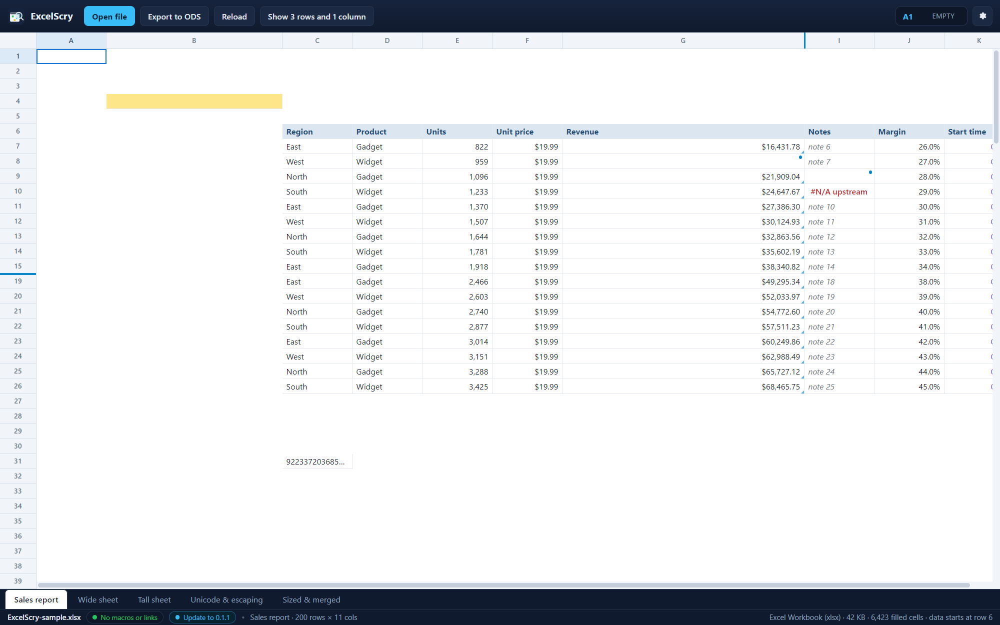

<!doctype html>
<meta charset="utf-8">
<title>ExcelScry — columns the reader sets the width of</title>
<style>
  body { margin: 0; background: #1b1d22; color: #c9cdd6;
         font: 14px/1.5 Segoe UI, system-ui, sans-serif; }
  figure { margin: 0; }
  img { display: block; width: 100%; height: auto; }
  figcaption { padding: 12px 16px; }
  code { color: #8fd3ff; }
</style>
<figure>
  
  <figcaption>
    The <code>Product</code> and <code>Notes</code> columns here are wider than
    the file says they are: both were dragged by their right edge in the strip
    of letters, and the grid kept them that way. Every column's edge is a grip
    — the pointer turns into a resize arrow over it — and the width it leaves
    behind is remembered per sheet, per file, beside the row, cell and scroll
    offset the file reopens at, so the table comes back the shape it was read
    in rather than as its author laid it out. A drag is drawn as it happens and
    written a moment after it stops, like the position; switching tabs gives
    each tab its own widths back rather than lending one sheet's shape to
    another; and double-clicking an edge puts that column back to the width the
    file gives it. Nothing is written back to the workbook: a column the reader
    widened is how the file is read, not an edit to it. (Shown in the UI
    harness, where both columns were dragged.)
  </figcaption>
</figure>
